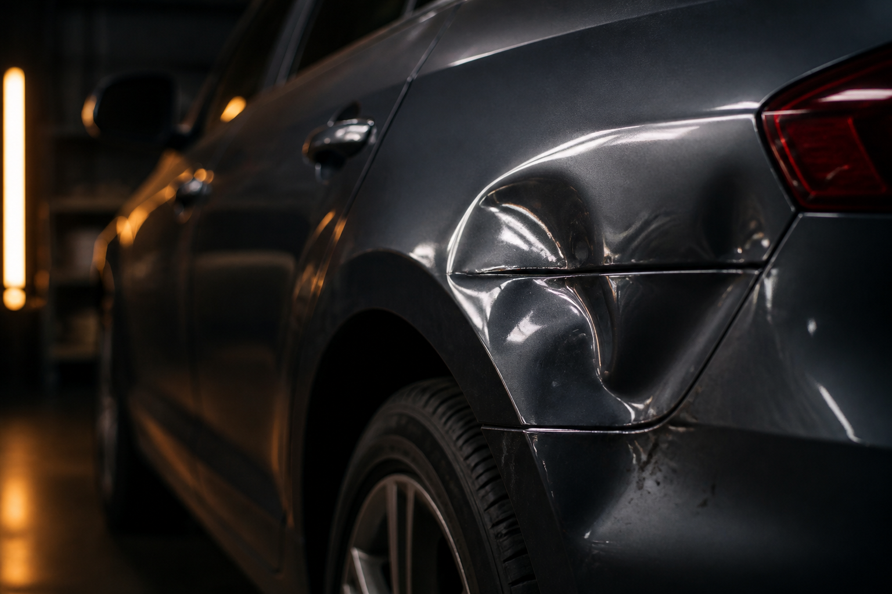
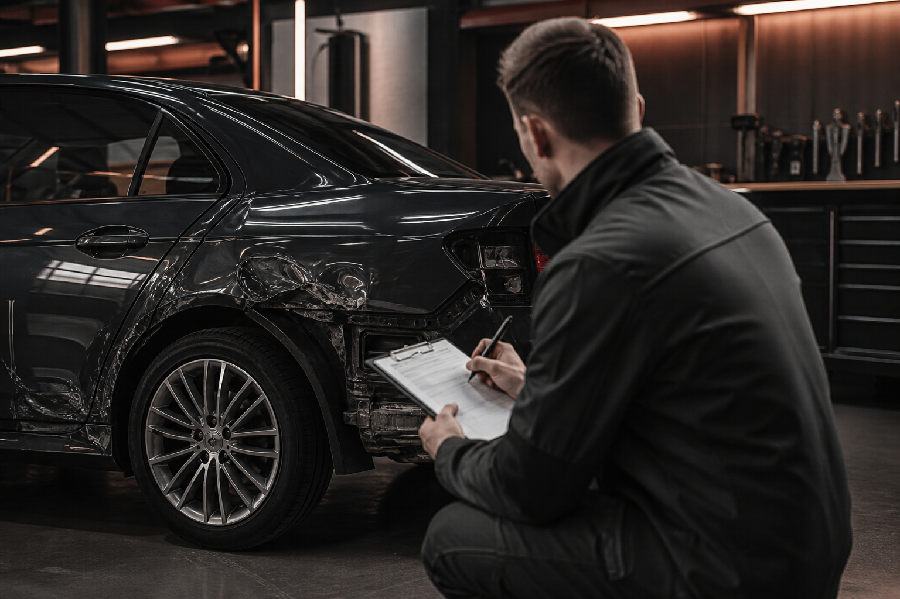

Unfallgutachten
Unabhängige Schadenaufnahme als technische Grundlage für die Regulierung.
Mehr erfahrenUnabhängiger Kfz-Sachverständiger
Unfallgutachten · Fahrzeugbewertung · Wohnmobile · Oldtimer. Unverschuldeter Unfall? Wir dokumentieren Schäden fachgerecht und schaffen eine belastbare Grundlage für die weitere Schadenregulierung.


Unabhängige Schadenaufnahme als technische Grundlage für die Regulierung.
Mehr erfahrenMarktwert, Wiederbeschaffungswert oder Fahrzeugwert je nach Anlass.
Mehr erfahren
Begutachtung und Bewertung von Freizeitfahrzeugen.
Mehr erfahrenZustand, Originalität und Wertermittlung für Klassiker.
Mehr erfahrenKfz-Meister und personenzertifizierter Kraftfahrzeugsachverständiger (Nachweis vor Veröffentlichung prüfen).
Berufliche Tätigkeit u. a. als Fahrzeugbewerter und Unfallschadengutachter — frühere Tätigkeit bei TÜV NORD, keine aktuelle Partnerschaft.
Ein Ansprechpartner von der ersten Kontaktaufnahme bis zur Besprechung des Gutachtens.